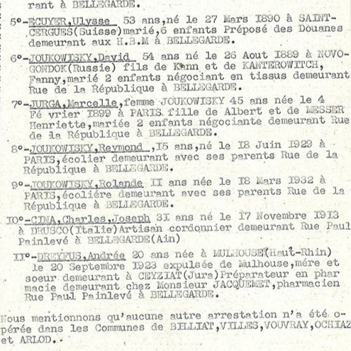

Portrait d’archive
Enfants Joukowitzki
Raymond JOUKOWITZKI
Raymond JOUKOWITZKI est né le 18/06/1929 à Paris en France.
Rassemblé à Lyon, il est déporté à Auschwitz le 07/03/1944 par le convoi n°69. Il est mort en déportation le 12/03/1944. Il avait 15 ans.
Déporté avec sa sœur Rolande et leurs parents David né le 26/08/1889 à Novogrodok, mécanicien de précision et Marcelle née Jurga le 04/02/1899 à Paris, tailleur. Déclaré officiellement "mort en déportation" au JO n°245 du 21/10/1994.
Dernière adresse connue : 40 rue de la République (Bellegarde-sur-Valserine)
Nom : JOUKOWITZKI
Prénom(s) : Raymond, Henri
Date naissance : 18/06/1929
Âge (ans) : 14
Lieu naissance : Paris 11
Pays ou département : Seine
Lieu rassemblement : Lyon
Dernière adresse : 13 ou 40, rue de la République
Ville : Bellegarde-sur-Valserine
Code postal : 01200
N° Convoi : 69
Date déportation : 07/03/1944
Informations diverses : Arrêté par la Milice à Bellegarde-sur-Valserine (Ain) le 10 ou 11/02/1944. Déporté avec sa sœur et leurs parents David (26/08/1889, Novogrodok), mécanicien de précision ou négociant en tissu et Marcelle née Jurga (04/02/1899, Paris), tailleur. Un mémorial départemental des déportés de l’Ain sculpté par Louis Leygue et inauguré en 1949 comprend les noms de la famille Joukowitzki est présent à Nantua, Route de Port (Ain, France).
Joukowitzki (Raymond, Henri), né le 18 juin 1929 à Paris (11e) (Seine), décédé le 12 mars 1944 à Auschwitz (Pologne) (JO n°245 du 21/10/1994). JO
Joukowitzki (Rolande, Denise), née le 31 mars 1932 à Paris (11e) (Seine), décédée le 12 mars 1944 à Auschwitz (Pologne) (JO n°245 du 21/10/1994) . Joukowitzki (David), né le 26 août 1889 à Novogroudok (Russie), décédé le 12 mars 1944 à Auschwitz (Pologne). Joukowitzki, née Jurga (Marcelle) le 4 février 1899 à Paris (11e) (Seine), décédée le 12 mars 1944 à Auschwitz (Pologne).
Lieu de déportation : Auschwitz
Lieu de départ : Drancy
Nombre total de déporté·e·s du convoi : 1501
Gazé·e·s à l'arrivée : 1311 (87,3 %)
Survivant·e·s en 1945 : 34 (2,3 %)
Rolande Denise JOUKOWITZKI
Rolande Denise JOUKOWITZKI est née le 31/03/1932 à Paris en France.
Rassemblée à Lyon, elle est déportée à Auschwitz le 07/03/1944 par le convoi n°69. Elle est morte en déportation le 12/03/1944. Elle avait 12 ans.
Déporté avec son frère Raymond et leurs parents David né le 26/08/1889 à Novogrodok et Marcelle née le 04/02/1899 à Paris. Déclarée officiellement "morte en déportation" au JO n°245 du 21/10/1994.
Dernière adresse connue : 40 rue de la République (Bellegarde-sur-Valserine)
Nom : JOUKOWITZKI
Prénom(s) : Rolande, Denise
Date naissance : 31/03/1932
Âge (ans) : 11
Lieu naissance : Paris 11
Pays ou département : Seine
Lieu rassemblement : Lyon
Dernière adresse : 13 ou 40, rue de la République
Ville : Bellegarde-sur-Valserine
Code postal : 01200
N° Convoi : 69
Date déportation : 07/03/1944
Informations diverses : Arrêté par la Milice à Bellegarde-sur-Valserine (Ain) le 10 ou 11/02/1944. Déportée avec son frère et leurs parents, David (26/08/1889, Novogrodok), mécanicien de précision ou négociant en tissu et Marcelle née Jurga (04/02/1899, Paris), tailleur. Un mémorial départemental des déportés de l’Ain sculpté par Louis Leygue et inauguré en 1949 comprend les noms de la famille Joukowitzki est présent à Nantua, Route de Port (Ain, France).
Joukowitzki (Rolande, Denise), née le 31 mars 1932 à Paris (11e) (Seine), décédée le 12 mars 1944 à Auschwitz (Pologne) (JO n°245 du 21/10/1994) . JO
Joukowitzki (Raymond, Henri), né le 18 juin 1929 à Paris (11e) (Seine), décédé le 12 mars 1944 à Auschwitz (Pologne) (JO n°245 du 21/10/1994). Joukowitzki (David), né le 26 août 1889 à Novogroudok (Russie), décédé le 12 mars 1944 à Auschwitz (Pologne). Joukowitzki, née Jurga (Marcelle) le 4 février 1899 à Paris (11e) (Seine), décédée le 12 mars 1944 à Auschwitz (Pologne).
Lieu de déportation : Auschwitz
Lieu de départ : Drancy
Nombre total de déporté·e·s du convoi : 1501
Gazé·e·s à l'arrivée : 1311 (87,3 %)
Survivant·e·s en 1945 : 34 (2,3 %)